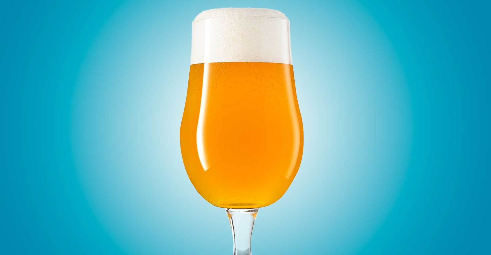

Both Coast IPA

Description
A traditional-ish IPA but with the juiciness of a New England IPA the best of both coasts in one beer.
By using adjunct malt not normally found in WC IPAs you can harness the hazy quality found in NE IPAs that is a by product of the biotransformation from dry hopping the beer earlier than the WC IPAs would typically be dry hopped.
Ingredients
Malt
- 8 lbs Pale Malt (2 Row)
- 4 lbs Pale Malt, Golden Promise
- 16 oz Flaked Oats
- 8 oz Chit Malt
Boil Hops
- 15 g Columbus
- 56 g Centennial
- 56 g Citra
- 15 g Simcoe
Dry Hops
- 56 g Simcoe
- 28 g Citra
- 56 g Simcoe
- 15 g Citra
Yeast
- 11.5 g S-04 English Ale Dry Yeast
Directions
- Mash for 60 minutes at 152*F
- Sparge, ensuring run-off takes approximately 90 minutes netting a kettle volume of 7 gallons
- Boil vigoriously for 45 minutes, ensuring the boil hops are added at the correct times
- Cool wort, knock out at 64*F to allow the yeast to begin fermentation by morning
- After 2 days add the dry hop additions
- Once fermentation is complete crash the beer down to 32*F for 2 days
- Transfer beer to brite tank and package